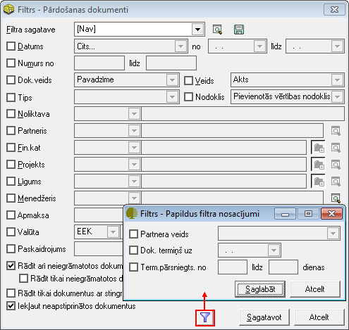

Pārdošanas dokumenti¶
Pārdošanas dokumentu atskaite tiek sagatavota par noteiktu periodu pēc noteiktiem izvēlētiem kritērijiem. Filtrs jāaizpilda, lai sagatavotu atskaiti. Atskaitē tiek ņemti dati no pārdošanas dokumentu žurnāla .
Dati uz ekrāna tiek parādīti atbilstoši norādītajiem datu atlases kritērijiem filtra ekrāna formā. Filtru var uzlikt, lai ierobežotu kādu datu parādīšanu uz ekrāna, iegūstot nepieciešamās izdrukas, vai arī ātrāk sameklētu nepieciešamos datus. Filtrs tiek izmantots arī atskaišu sagatavošanā un atsevišķu dokumentu satura aizpildīšanā.
Datu atlases kritērijus var saglabāt (.. image:: images_ozols/24938.png
- scale
100%
). Izvēloties izveidoto filtra sagatavi (.. image:: images_ozols/24943.png
- scale
100%
), filtrs tiek automatizēti aizpildīts no filtra sagataves. Lai izveidotu atskaiti pēc vēlamajiem kritērijiem, Rīku joslā jānospiež poga

(Ctrl+F), tiek atvērts filtra logs:
{kind=link}
Datums: periods, par kuru sagatavot iepirkumu dokumentu atskaiti;
Numurs: dokumentu numurs;
Dok. veids: dokumentu veids;
Veids: dokumenta veids;
Tips: iepirkuma dokumenta satura tips;
Nodoklis: iespējams atlasīt pēc nodokļa;
Noliktava: ja ir vairākas noliktavas, tad jāizvēlas noliktava, par kuru tiks gatavota atskaite;
Partneris: iespējams atlasīt arī par partneri;
Noliktava: dimensiju dalījums;
Apmaksa: dokumenta apmaksas kritērijs;
Valūta: pārdošanas dokumentu valūta;
Paskaidrojums: atlasīšana pēc iepirkuma dokumentos nodefinētajiem paskaidrojumiem;
Rādīt arī neiegrāmatotos dokumentus: lai atskaitē iekļautu arī neiegrāmatotos dokumentus;
Rādīt tika neiegrāmatotos dokumentus: lai sagatavotu atskaiti tikai par neiegrāmatotajiem dokumentiem;
Rādīt tikai dokumentus ar stingrās uzskaites numuriem: lai sagatavotu atskaiti tikai parpārdošanas dokumentiem arstingrās uzskaites numuriem;
Iekļaut neapstiprinātos dokumentus: lai iekļautu atskaitē arī neapstiprinātos dokumentus.
Sagatavojot atskaiti, iespējams definēt arī papildus filtra nosacījumus, un tad nospiežot pogu

, un, ja filtrā visi atskaites kritēriji izvēlēti, jānospiež poga .. image:: images_ozols/25619.png
- scale
100%
. Sagatavotos atskaites datus ir iespējams arī izdrukāt. Lai drukātu datus, rīko joslā jānospiež poga

(Ctrl+P), un poga

.